Retorica
È l'arte di persuadere con le parole e, in pubblicità, anche con le immagini. Serve a rendere un messaggio memorabile, emozionante e convincente.

Seta e polvere. Rolls-Royce e Golden Goose: due modi opposti di farci desiderare.
Analizziamo due campagne di lusso con gli strumenti della retorica e della semiotica, e le collochiamo nella classificazione di Jean-Marie Floch. Da una parte la perfezione silenziosa di Rolls-Royce, dall'altra l'imperfezione ironica di Golden Goose.
 2020
Il mito sotto il velo
Rolls-Royce Ghost, teaser film
2020
Il mito sotto il velo
Rolls-Royce Ghost, teaser film
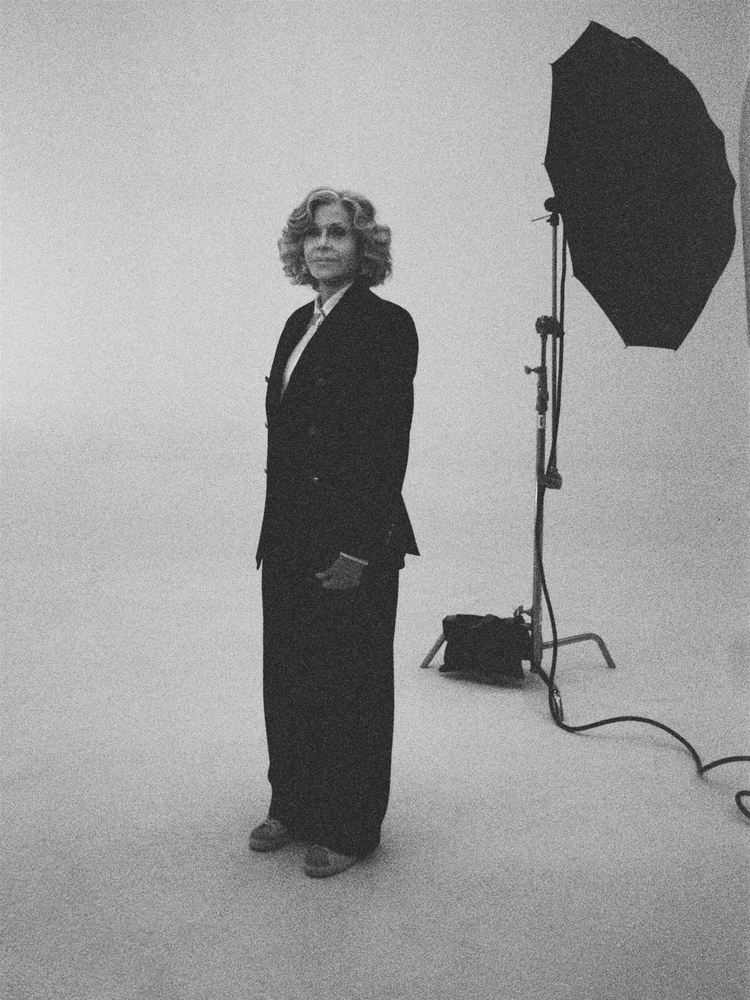
2025 Nati per essere (im)perfetti Golden Goose, Born to Be a Super-Star
È l'arte di persuadere con le parole e, in pubblicità, anche con le immagini. Serve a rendere un messaggio memorabile, emozionante e convincente.

È la scienza dei segni: studia come qualsiasi cosa (una parola, un colore, un oggetto) produce significato. In pubblicità ci aiuta a leggere ciò che un'immagine "dice" senza dirlo.
Ferdinand de Saussure
Ogni segno ha due facce. Il significante è la forma che percepiamo (un suono, un'immagine); il significato è il concetto che richiama.
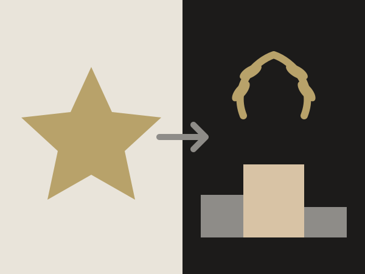
Roland Barthes
La denotazione è il significato letterale: ciò che si vede. La connotazione è il significato aggiunto, culturale ed emotivo.

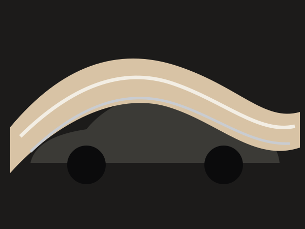
Sostituisce un'idea con un'immagine che le somiglia.
Un'auto avvolta nella seta = un'auto morbida come seta.

Paragone esplicito con "come".
"Silenzioso come un respiro".

Esagerazione voluta.
Un profumo che fa fermare il traffico.

Dà qualità umane a un oggetto.
Una scarpa che "ha vissuto" e racconta storie.
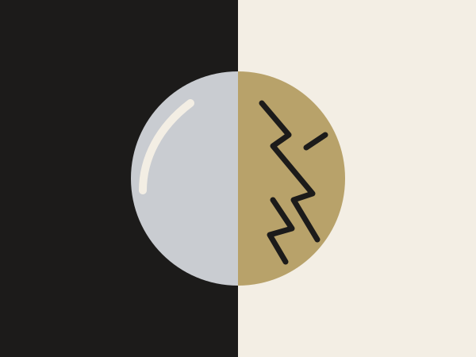
Accosta idee opposte.
Nuovo / consumato, lusso / strada.
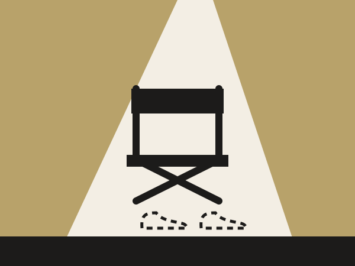
Dice una cosa intendendo il contrario, o gioca con il pubblico.
Una diva in crisi per un paio di sneakers.
Mescola sensi diversi.
"Un silenzio vellutato", "un colore che si sente".
Jean-Marie Floch (1947–2001), semiologo francese, ha organizzato i modi di fare pubblicità su un quadrato semiotico.
Floch ci insegna che non conta solo cosa si vende, ma il tipo di discorso che si sceglie per venderlo.
Rolls-Royce nasce dall'incontro del 1904 tra Charles Rolls e Henry Royce. Nel 1907 la Silver Ghost la consacra come "la migliore auto del mondo"; dal 1911 lo Spirit of Ecstasy, la statuetta sul cofano, ne è il simbolo. Oggi Rolls-Royce Motor Cars appartiene al gruppo BMW e produce a mano a Goodwood, in Inghilterra.
Perfezione, silenzio, esclusività, su misura.
Nel 2020 Rolls-Royce lancia la seconda generazione della Ghost, il suo modello più venduto. Il design segue la filosofia "Post Opulence": un lusso che rinuncia all'ostentazione e punta su purezza e sostanza. Il lancio avviene online il 1° settembre, in piena pandemia, preceduto da una serie di teaser.
 Guarda il teaser · 2:12
Guarda il teaser · 2:12
Sfida creativa: mostrare l'essenza dell'auto senza mostrarla. Soluzione: un velo di seta digitale che scivola sulla carrozzeria e rivela cinque dettagli, uno alla volta, fino allo Spirit of Ecstasy. La musica cresce insieme alla rivelazione.
28,4 mln persone raggiunte650.000 visualizzazioni4 giorni
Al centro del racconto, lo Spirit of Ecstasy.


Un fondo nudo sfumato di rosa-malva, seta chiara e perlacea. Luce radente che scolpisce le forme. Inquadrature strette, lente, centrate: nessuna strada, nessun paesaggio, nessuna persona. L'auto esiste in uno spazio fuori dal mondo. Il nero di queste pagine è una scelta grafica del sito, non il colore del film.
La seta è il tessuto più nobile, legato alla storia del lusso. Connota morbidezza, leggerezza, silenzio, preziosità. È anche il lenzuolo del "fantasma": richiama il nome Ghost e l'idea di apparizione.
La seta e la carrozzeria condividono le stesse qualità: fluidità delle linee, superfici senza imperfezioni, movimento senza sforzo. Il tessuto diventa il ritratto dell'auto: se la seta è così, anche la Ghost lo è.
Strategie persuasive. Attesa e mistero (teaser), esclusività (ciò che non si vede è riservato a pochi), eleganza estetica al posto delle informazioni tecniche.
| Si vede (denotazione) | Si intende (connotazione) |
|---|---|
| Un tessuto chiaro che si muove | Purezza, leggerezza, perfezione |
| Un'auto in parte nascosta | Mistero, esclusività, attesa |
| Un fondo nudo, senza strada né orizzonte | Un luogo fuori dal mondo, quiete, sogno |
| Lo Spirit of Ecstasy | Tradizione, eredità, status |
Rolls-Royce non ci mostra un'auto: ci fa immaginare la perfezione.
Non dice nulla di pratico: niente prezzo, motore o consumi. Avvolge l'auto in un'aura di sogno e la trasforma in un simbolo di perfezione. Il prodotto diventa un'apparizione quasi soprannaturale. Comunica un valore di base (purezza, perfezione, quiete), non un valore pratico: nel quadrato di Floch è l'opposto della pubblicità referenziale.
Una persona che non ha bisogno di dimostrare nulla. Ama la qualità discreta, il silenzio, la calma. Il messaggio implicito: "Il vero lusso non si mostra, si percepisce".
La filosofia Post Opulence (materiali, sostanza, riduzione) ha qualcosa della pubblicità sostanziale. Il teaser però trasforma la sostanza in simbolo, quindi resta mitico.
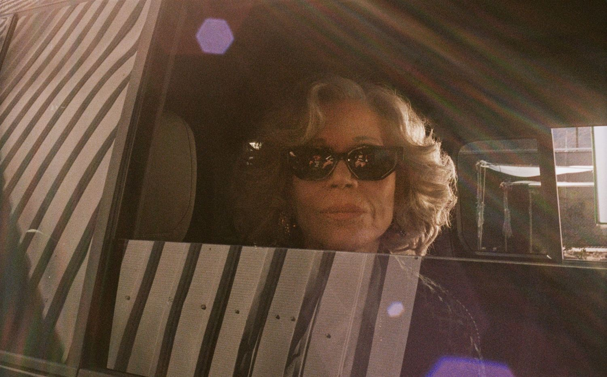
Forget the ordinary Forget the script Take the leap
Born to Be a Super-Star. Lanciata a febbraio 2025, regia e foto di Maik Schuster: celebra la sneaker Super-Star e apre i festeggiamenti per i 25 anni del brand.
Golden Goose nasce il 23 dicembre 2000 a Marghera (Venezia), da Francesca Rinaldo e Alessandro Gallo, due giovani designer estranei al mondo della moda. Nel 2007, colpiti dalle scarpe consumate degli skater di Los Angeles, creano la Super-Star: una sneaker artigianale italiana già "vissuta", con la stella sul lato. A gennaio 2025 il brand dichiara oltre 180 negozi in 23 paesi.
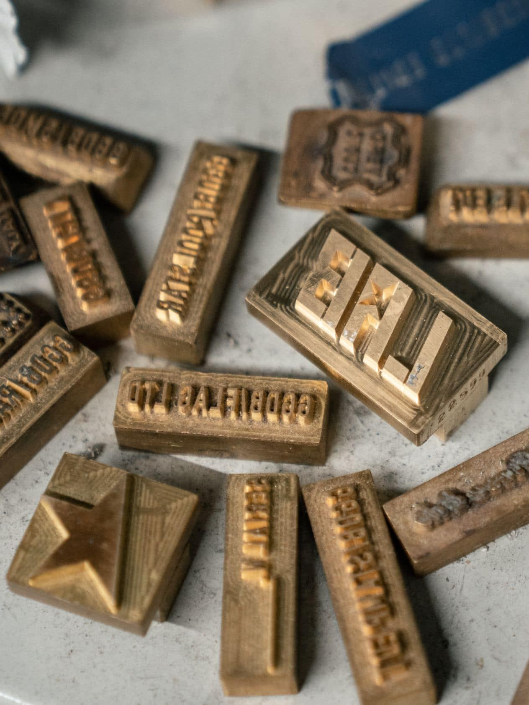
Ogni graffio diventa un valore, ogni crepa racconta una storia. Il brand cita il kintsugi, l'arte giapponese di riparare le ceramiche con l'oro: la ferita non si nasconde, si valorizza.
Pelle segnata, nastro adesivo, scritte a penna, suola "sporca" fatti a mano. È un paradosso: si paga di più un oggetto nuovo che sembra vecchio. Il messaggio è che il lusso non è la perfezione, ma l'unicità.
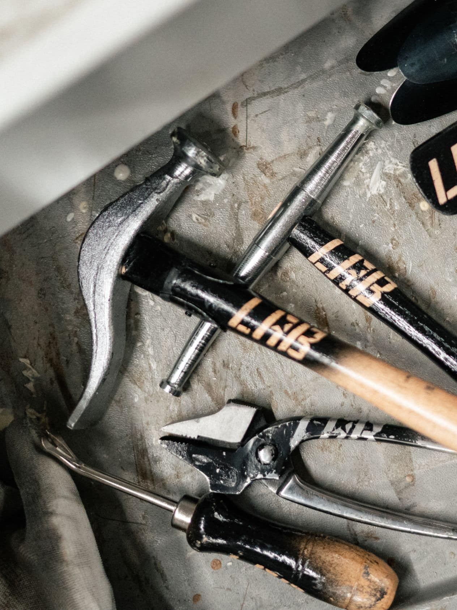
Jane Fonda arriva sul set di un servizio fotografico, ma manca il pezzo chiave del look: le sneakers. Il cast corre contro il tempo per portargliele; le scene sono scandite dal tormentone "Super!".
Trama secondo The Impression. Il film si apre su Instagram, nel post segnalato da nss magazine. Foto: © Golden Goose, foto Maik Schuster
Jane Fonda (87 anni al lancio) è un'icona di reinvenzione: attrice, attivista, regina del fitness.
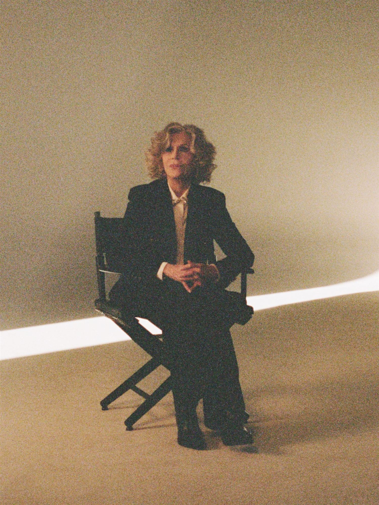
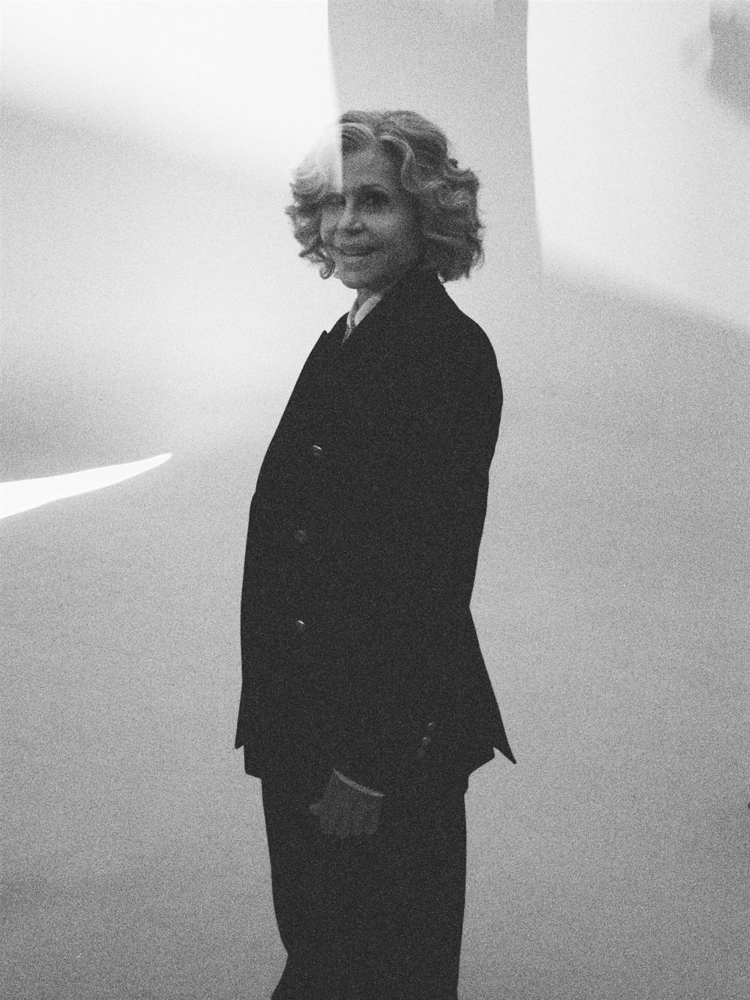
Persone diverse per età, mondo e storia: insieme dicono che una "star" non ha un modello unico.
Born to Be a Super-Star
"Nati per essere una super-star" gioca su un doppio senso: Super-Star è il nome della scarpa e anche la promessa di chi la indossa. A nostro avviso ricorda il titolo di una canzone rock, "Born to Be Wild": spirito ribelle, libertà.
Toni caldi e naturali: crema, sabbia, il nero degli abiti, il metallo delle stelle. Fotografia luminosa e granulosa, con movimento e corpi in azione. Ambientazione: un set fotografico e il suo caos dietro le quinte. Il ritmo è veloce, quasi da commedia.
Ironia Una leggenda di Hollywood bloccata perché mancano le scarpe.
Iperbole comica Una corsa adrenalinica per un paio di sneakers.
Paradosso La super-star più giovane nello spirito è la più anziana.
Antitesi Lusso / strada, nuovo / consumato, glamour / backstage.
Metanarrazione Lo spot racconta come si fa uno spot.
| Si vede (denotazione) | Si intende (connotazione) |
|---|---|
| Sneakers consumate | Esperienza vissuta, autenticità |
| Jane Fonda energica | L'età non è un limite, il carisma è senza tempo |
| Persone di mondi diversi | Comunità, inclusione, individualità |
| Il backstage caotico | Spontaneità, il lusso che non si prende sul serio |
| La stella | Successo e, insieme, la firma del brand |
Non celebra il prodotto in modo serio e diretto: lo fa sorridere, giocando con i cliché della moda e dello spot stesso. Ironia e paradosso sono la sua lingua, e il pubblico deve "stare al gioco". Ma il sogno di essere una star è un valore mitico.
Golden Goose ci vende l'imperfezione come la forma più alta di unicità.
"Non devi essere perfetto: devi essere te stesso". Il lusso è la tua storia, i tuoi segni, il coraggio di saltare.
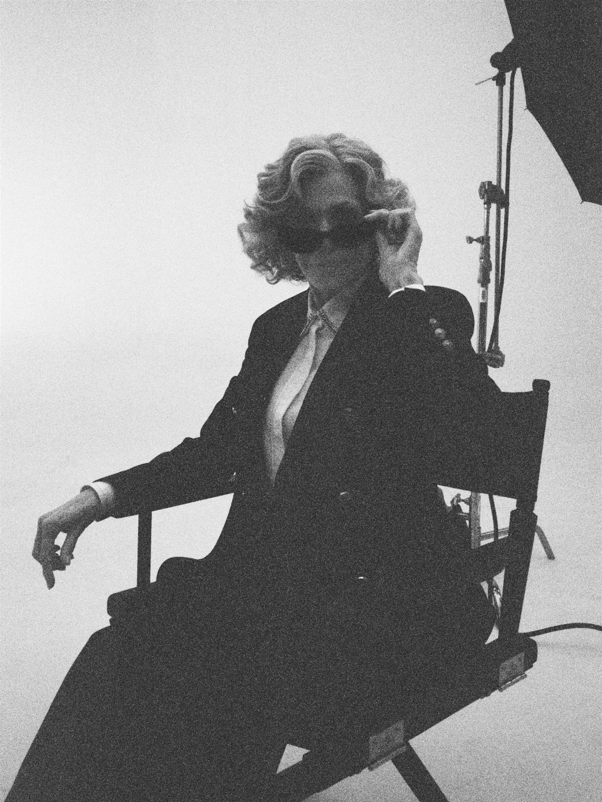
| Rolls-Royce Ghost (2020) | Golden Goose Super-Star (2025) | |
|---|---|---|
| Categoria di Floch | Mitica | Obliqua nella forma, mitica nel messaggio |
| Idea di lusso | Classico: perfezione ed esclusività | Anticonvenzionale: imperfezione e individualità |
| Prodotto | Nascosto, rivelato a poco a poco | Al centro di una corsa comica |
| Persone | Nessuna | Un cast eterogeneo guidato da Jane Fonda |
| Tono | Solenne, silenzioso, sognante | Ironico, energico, provocatorio |
| Colori | Rosa-malva, perla, bianco seta | Crema, sabbia, nero, oro metallico |
| Ritmo | Lento, fluido | Veloce, frammentato |
| Figura chiave | Metafora (la seta) | Ironia e paradosso |
| Come nasce il desiderio | Distanza: ciò che è raro e irraggiungibile | Identificazione: "potresti essere tu" |
| Emozioni | Meraviglia, quiete, ammirazione | Divertimento, energia, libertà |
| Consumatore | Chi è già arrivato e non deve dimostrarlo | Chi vuole distinguersi ed esprimersi |
Voi, oggi, desiderate di più ciò che è perfetto o ciò che vi somiglia?
| Immagine | Credito |
|---|---|
| Fotogrammi del teaser Ghost | © Rolls-Royce Motor Cars / Imagination / Cath Elliott |
| Illustrazione Post Opulence | © Rolls-Royce Motor Cars (PressClub, uso editoriale) |
| Foto della campagna Golden Goose | © Golden Goose, foto Maik Schuster |
| Timbri e attrezzi (racconto del marchio, non campagna) | © Golden Goose |
| Schemi e quadrato di Floch | Grafica originale del progetto |
Progetto scolastico a scopo didattico, non affiliato ai marchi citati. Marchi e immagini appartengono ai rispettivi titolari. La classificazione delle due campagne è un'interpretazione di questa analisi.